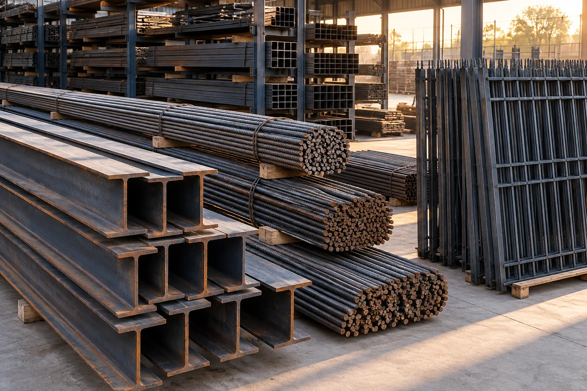
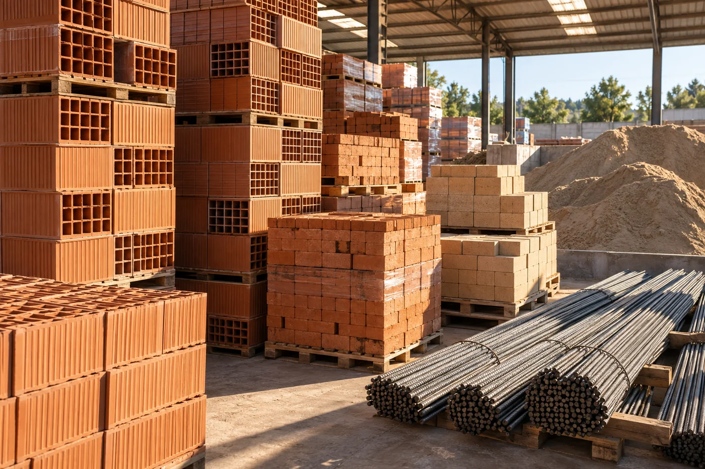
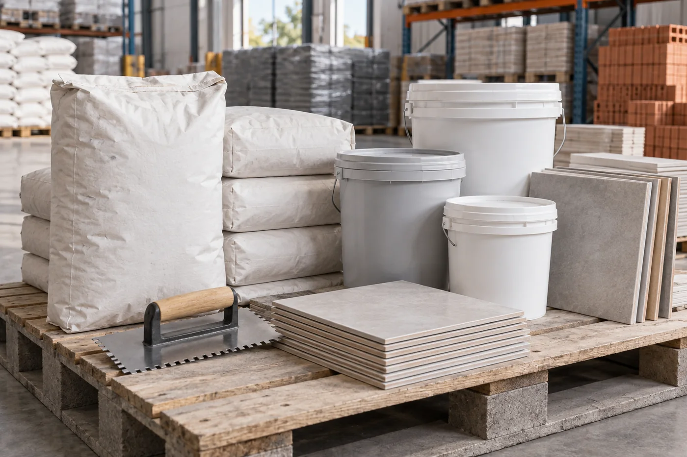

FORMA / ESTRUCTURAMATERIALIDAD · IDEAS · CONSTRUCCIÓN
La materia
de tus ideas.
Una nueva mirada sobre los materiales de siempre. Elegí lo que tu obra necesita y conversemos por WhatsApp.
↓
CERÁMICA JOSÉ C. PAZ / DESDE LOS CIMIENTOS01 / NUESTRA MIRADA
Creemos en el potencial
de cada proyecto.
Una casa, una reforma o una gran obra comienzan con una buena elección. En Cerámica José C. Paz reunimos materiales, asesoramiento y logística para acompañarte de principio a fin.
Descubrí los materiales ↗
MATERIA / DETALLE02 / MATERIAL PARA CREAR
Elegí. Consultá.
Construí.
Un catálogo claro para encontrar lo que necesitás. Nos escribís y armamos tu pedido a medida.
Catálogo orientativo. Consultá variedades, stock y presupuesto por WhatsApp.
03 / MÁS QUE MATERIALES
Hacemos que
lleguen.
Entregas a domicilio, servicio de hidrogrúa sin cargo y presupuestos que se adaptan a tu proyecto.
Hablar de mi obra ↗04 / EMPECEMOS
Tu próxima obra
nos encuentra acá.
Ruta 8 y Ruta 197
José C. Paz, Buenos Aires
Imágenes ilustrativas generadas para esta propuesta de diseño.